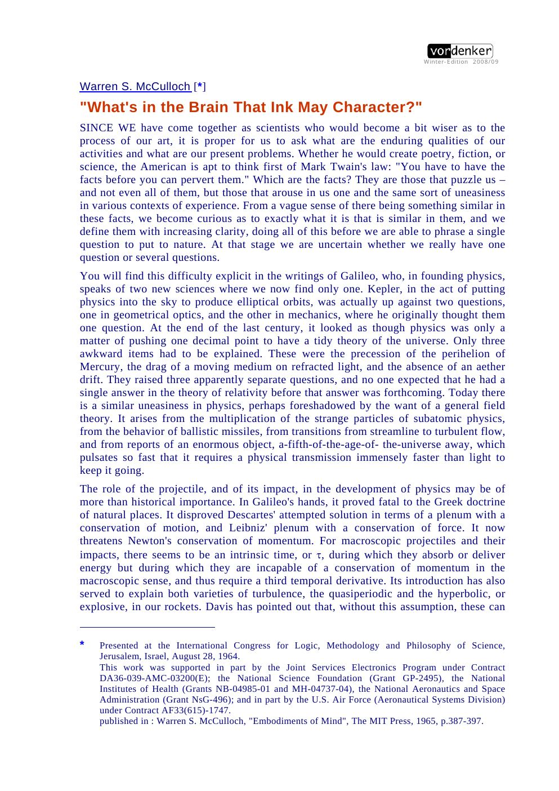
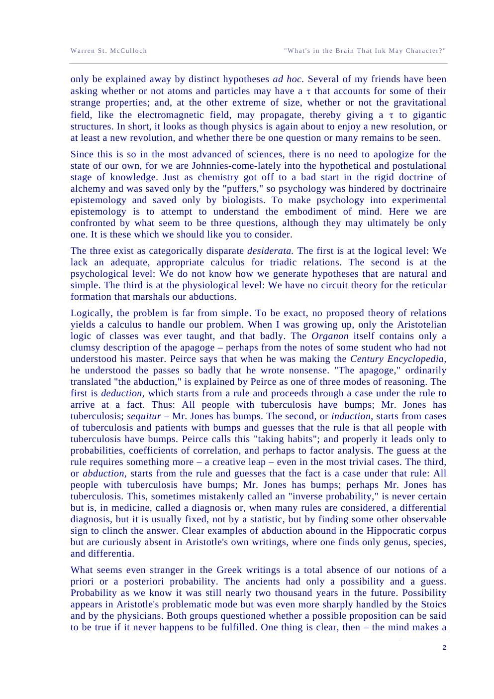
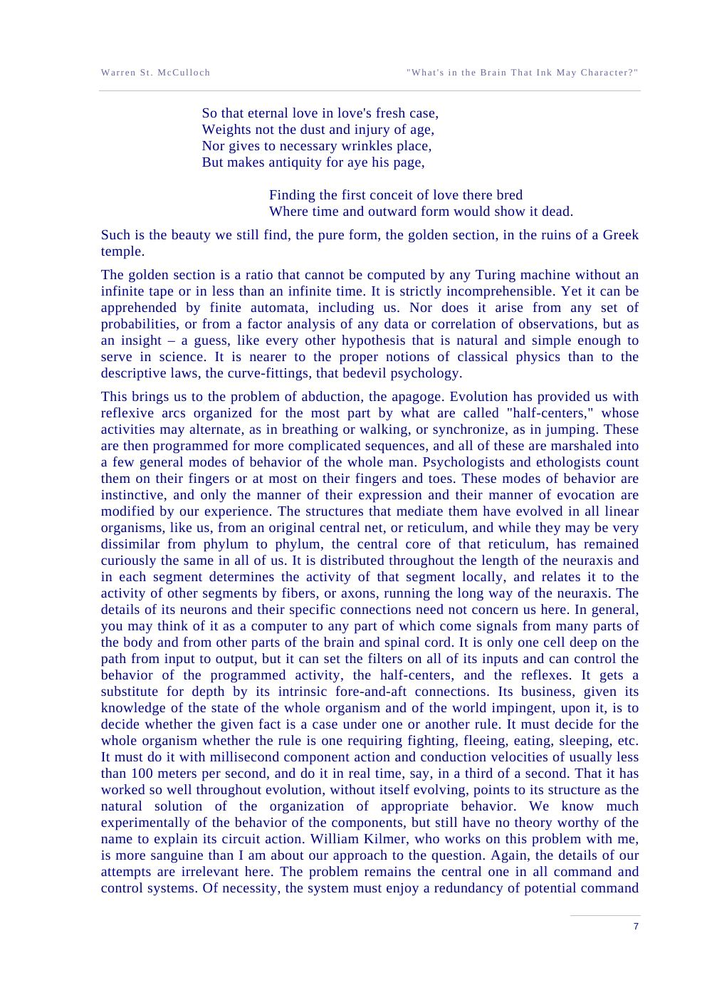

A calculus for triads
Aristotelian logic handles classes; the logic of propositions handles truth-values. Neither handles “A means B to C.” McCulloch wants a logic of relations with three or more relata.
International Congress for Logic, Methodology and Philosophy of Science · Jerusalem · 1964
McCulloch's late essay on the three problems he could not solve: a calculus for triadic relations, a theory of how we invent simple hypotheses, and a circuit theory of the reticular formation. The question is Shakespeare's; the answer is the Stoic Lekton — meaning as a third thing in the head.
Read the plateThe thesis
The essay begins with a question about science and ends with a question about the brain. In between, McCulloch argues that the unit of meaning is irreducibly triadic: a sender, a signal, and a receiver — and, in the head, a fourth thing the Stoics called the Lekton, “something in the head like a fist in the hand.”
A signal is not true or false in itself. It is true if it implies its bound cause — the natural event that normally produces it — and false if it arises ectopically. A signal without a bound cause is noise. A theory that keeps only sender and receiver has already lost the meaning.
Laboratory 01 · the triad and the Lekton
In the triadic view, the signal means something to a receiver because there is a Lekton in the head. Switch to the dyadic view and only the physical chain remains: sender, signal, receiver, no meaning. Make the signal ectopic and it becomes false — the receiver gets noise.
The Stoic triad is not a metaphor for information flow. It is a claim about what has to be present for a signal to mean anything at all.
The unfinished programme
Aristotelian logic handles classes; the logic of propositions handles truth-values. Neither handles “A means B to C.” McCulloch wants a logic of relations with three or more relata.
How do we generate the simple, natural hypotheses that science and perception depend on? Not by induction from data alone, and not by chance. McCulloch calls it abduction, and admits he does not know how it works.
The reticular core is a one-cell-deep command system that sets filters, selects modes of behaviour, and decides whether a fact is a case under a rule. We have no circuit theory worthy of the name.
The Stoic “sayable”: what is meant, as distinct from the utterance and the physical signal. McCulloch treats it as a real third term, embodied in the nervous system.
The inference pattern
McCulloch takes the three Peircean modes seriously. Deduction goes from rule and case to fact. Induction goes from cases and facts to a rule. Abduction goes from rule and fact to the hypothesis that the fact is a case under the rule — the creative leap.
The three modes. Only deduction is certain. Induction yields probabilities. Abduction yields a hypothesis — never certain, always a guess, and the source of scientific ideas.
The Stoic triad. The signal B means something to C because of A; the meaning is neither the utterance nor the physical signal, but the Lekton in the head.
Laboratory 02 · the golden section
McCulloch ends with an aesthetic example. The golden section is a ratio that, he says, cannot be computed exactly by a Turing machine without an infinite tape — yet finite automata like us can recognise it at a glance. Move the rectangle toward φ and watch the recognition happen.
The dashed line is the golden rectangle. The solid rectangle is yours. When they coincide, the eye has done something McCulloch thought no finite machine could do exactly.
The voice
“What's in the brain that ink may character, / Which hath not figur'd to thee my true spirit?”
“What's in the brain is the Stoic Lekton.”
“A signal should be said to imply its natural cause, which is bound, and not its casual cause; for when it arises ectopically, it is false for the receiver.”
“We lack an adequate, appropriate calculus for triadic relations.”
“We do not know how we generate hypotheses that are natural and simple.”
“We have no circuit theory for the reticular formation that marshals our abductions.”
“The golden section is a ratio that cannot be computed by any Turing machine without an infinite tape or in less than an infinite time. It is strictly incomprehensible. Yet it can be apprehended by finite automata, including us.”
“The question remains: What's in the brain that ink may character?”
The paper itself
click to enlarge



Why it matters
The 1943 calculus reduced thought to propositions; this essay admits what that reduction leaves out. Meaning is triadic. Hypothesis-formation is not deduction. The reticular formation is a command system we still cannot model in its own terms. McCulloch names these gaps instead of hiding them.
They are still open. Neuro-symbolic AI struggles with relations; machine learning struggles with the leap from data to a simple hypothesis; neuroscience still lacks a circuit theory of the reticular core. The essay is a map of the unfinished part of the codex.